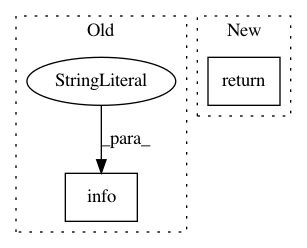

da821b12fbb8eb8cb1d2754ad82fe5c1bb53ac48,torchnlp/metrics/bleu.py,,get_moses_multi_bleu,#Any#Any#Any#,30
Before Change
"master/scripts/generic/multi-bleu.perl")
os.chmod(multi_bleu_path, 0o755)
except:
logger.info("Unable to fetch multi-bleu.perl script, using local.")
metrics_dir = os.path.dirname(os.path.realpath(__file__))
bin_dir = os.path.abspath(os.path.join(metrics_dir, "..", "..", "bin"))
multi_bleu_path = os.path.join(bin_dir, "tools/multi-bleu.perl")
After Change
os.chmod(multi_bleu_path, 0o755)
except:
logger.warning("Unable to fetch multi-bleu.perl script")
return None
// Dump hypotheses and references to tempfiles
hypothesis_file = tempfile.NamedTemporaryFile()
hypothesis_file.write("\n".join(hypotheses).encode("utf-8"))
In pattern: SUPERPATTERN
Frequency: 4
Non-data size: 2
Instances
Project Name: PetrochukM/PyTorch-NLP
Commit Name: da821b12fbb8eb8cb1d2754ad82fe5c1bb53ac48
Time: 2018-06-02
Author: petrochukm@gmail.com
File Name: torchnlp/metrics/bleu.py
Class Name:
Method Name: get_moses_multi_bleu
Project Name: NifTK/NiftyNet
Commit Name: ebbc9fc0fc52a650ebd5bbbd954733bada35672e
Time: 2017-08-08
Author: wenqi.li@ucl.ac.uk
File Name: niftynet/layer/histogram_normalisation.py
Class Name: HistogramNormalisationLayer
Method Name: is_ready
Project Name: allenai/allennlp
Commit Name: 8c2c5903e7f1bbd4bb8391393fec698d0e119dfe
Time: 2020-02-17
Author: sacastro@umich.edu
File Name: allennlp/data/batch.py
Class Name: Batch
Method Name: as_tensor_dict
Project Name: ray-project/ray
Commit Name: 67c01455fe313a65cc65640e52892ed91e08ea8b
Time: 2020-05-16
Author: rliaw@berkeley.edu
File Name: python/ray/tune/function_runner.py
Class Name:
Method Name: wrap_function